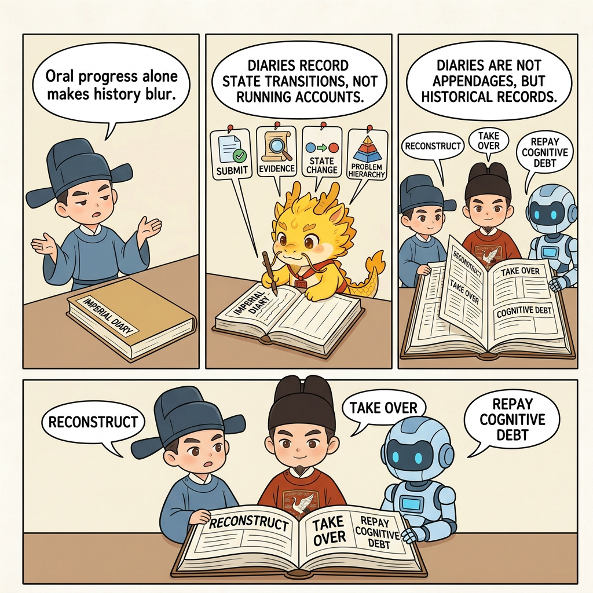

Evidence
Cyber Chronicles Sample

Cyber Chronicles Sample: Three System Transitions in One Day (Redacted)
Table of Contents
- What This Page Solves
- Shortest Summary
- Background
- First System Transition: Multi-Source Content Infrastructure Takes Shape
- Second System Transition: The CLI Workflow Takes Shape
- Third System Transition: The Artifact Hub Takes Over the Mainline
- Why This Sample Proves High Governance Can Still Move Fast
- Common Misreadings
- Related Pages
What This Page Solves
When many people first hear the phrase "Cyber Chronicles," they understand it as a kind of discipline requirement: commit more often, write logs diligently, and do not mash all changes into one lump.
That is not entirely wrong, but it is not deep enough.
The real question is not merely whether commits should be frequent. It is a more practical challenge that outsiders often use to question Cyber-Ming-Protocol:
Does high-friction governance inherently slow down deep-water development?
This page answers no. What it aims to prove is this:
As long as chronicle density is high enough, a complex system can still complete multiple system-level transitions within a single day; and that speed is not black-box luck, but speed that can be reconstructed, argued over, and governed.
This page does only one thing: it presses that question back into a real sample.
It does not unpack the concrete diff, it does not tell the real business story, and it does not rely on private screenshots. It only does this:
Using the Git log from a single real development day, reconstruct how a complex system underwent three clear system-level transitions in one day under high-governance conditions.
If you are an evidence-first reader, the shortest conclusion to remember is this:
- this day was not merely "a lot of commits happened"
- under high governance, three system-level upgrades were completed
- each upgrade can be reconstructed from Git chronicles in hour-scale slices
- therefore this speed was not a lucky black-box collision, but governable, reviewable, sustainable speed
Shortest Summary
This sample is not trying to prove that "the Git record is very complete." It is trying to prove this:
High-friction governance does not equal slow progress. The speed that matters is not lucky speed produced by black-box collision, but speed in which several system-level transitions happen within a day and can still be reconstructed afterward in white-box form.
Compress the entire day into the shortest trajectory, and there are really only three clear transitions:
Phase 1: Multi-source content infrastructure
-> Repair semantic contracts
-> Establish unified routing
-> Add stability for hybrid scenarios
Phase 2: CLI workflow takes shape
-> Run dedicated scouting
-> Introduce workspace as an organizing unit
-> Merge parallel lines back together
-> Close the interactive loop
Phase 3: Artifact hub takes over the mainline
-> Strip old coupling
-> Rename the hub properly
-> Establish the artifact pipeline
-> Shift the CLI mainline onto the artifact systemIn other words, the most important thing about the day is not how much code was written. It is that the system's center of gravity shifted three times in recognizably different ways.
Background
This sample comes from the Git chronicles of a real development day, but the public version has been uniformly redacted:
- the real business shell, content domain, and platform details are all generalized
- module names, feature names, commit rhythm, and transition structure are retained
- the focus remains on rhythm and transition, not on the business story itself
So what you see here is not gossip from one vertical domain. It is something more transferable:
Once development enters deep water, how do high-frequency chronicles compress "we were busy all day" back into "how, exactly, did the system evolve today"?
This page matters because many teams' Git history can answer only questions like:
- who changed which file today
- which feature gained a few more patch pieces
But it cannot answer:
- did the system complete a level-up today
- did the mainline center of gravity actually shift
- at a given moment, was the work patching, paving the road, scouting, or converging
This sample is here to prove that when chronicle density is high enough, system transitions can indeed be reconstructed.
First System Transition: Multi-Source Content Infrastructure Takes Shape
This transition happened roughly between 10:00 and 12:00.
If you look only at filenames, this phase resembles a pile of scattered chores. But if you read it by commit intent, it is actually very concentrated: the system is moving from "single-point scripts" toward "a unified multi-source entry layer."
10:00 - Repair the semantic contract first, do not rush to pile on features
The most valuable record from the first hour is:
10:25 257f611 fix(semantic-*): accept qualitative confidence aliasesThat kind of commit shows that development did not begin by piling on more features. It first repaired the analysis-layer contract so that downstream structured processing could speak in a more uniform and more tolerant way.
That step matters a great deal. In complex systems, whether later advances succeed often depends less on "did we add another feature" and more on "did the base contract stand up first."
11:00 - Multi-source paths stop running separately; unified routing begins to appear
Starting with the 11 o'clock wave of commits, the outline of the first system transition becomes very clear:
11:34 1b601ca feat(*): add * auth runtime
11:35 03d18cc feat(*): add shared * extraction chain
11:48 375e52c feat(*): add unified source router
11:48 f62a8b4 refactor(semantic-*): accept routed * bundles
11:49 c5f7fee refactor(*): dispatch * through routerRead together, the signal is obvious:
- old guards and hard-coded paths are starting to be retired
- multi-source inputs no longer wire in separately, but are gathered through a router
- the semantic layer also begins to recognize the routed bundle as a higher-order entrypoint
That means the system has undergone its first shift from "a collection of scripts for individual sources" to "a system with a unified ingress layer."
12:00 - The system goal shifts from "can run" to "can stay stable"
If the 11 o'clock wave answered "how do multiple sources connect in," the 12 o'clock wave answered "once they connect, can the system remain stable."
Representative records include:
12:25 d3c13e1 fix(*): warm preview before * playlist
12:26 a7dd140 feat(*): extend manifest for routed sources
12:27 6695742 fix(semantic-*): compact oversized * prompts
12:33 fcc851c fix(semantic-*): map named confidence labels
12:44 cfb9633 docs(log): record mixed manifest * rolloutThose commits show that the system goal has already been raised from "the chain exists" to "the chain can hold steady in mixed scenarios."
So the first phase is not a pile of loose micro-fixes. It is a clean transition chain:
- unify the semantic contract first
- unify source routing second
- patch mixed-scenario stability last
That is the first system transition:
The system moved from single-point extraction scripts to multi-source content infrastructure with a unified ingress layer and stable boundaries.
The speed here is not the speed of recklessly wiring in sources. It is the speed of stabilizing the contract first, unifying the ingress second, and stabilizing hybrid scenarios third. Because the order is clear, this phase is governable speed, not lucky speed.
Second System Transition: The CLI Workflow Takes Shape
The second transition happened roughly between 13:00 and 18:00. Its core is not adding more sources, but pushing the system from "can process content" to "can close a loop around workspace and CLI."
13:00 - Run dedicated scouting first, not blind edits on the mainline
The commit density at 13:00 drops, but the intent becomes even clearer:
13:00 2171970 docs(*): record desktop * event pipeline
13:09 4ee7495 feat(*): add native * probe
13:12 13c66ca feat(*): scan embedded * artifactsThese commits are valuable in complex projects because they mark not feature pileup, but a front-line intelligence phase. Without that kind of scouting, most later features can only advance by blind patching.
14:00 - For the first time, the system rises from content chain to organizational structure
At 14:00, the key move of the second transition appears:
14:18 0a4b4a8 feat(workspace): resolve and sanitize * titles
14:21 3931c9d feat(workspace): create triple-parallel * directories
14:24 0838cae feat(cli): bootstrap * workspaceThe most important thing here is not the literal directory names. It is that the system introduces a new organizing unit: workspace.
That means the mainline is no longer only "fetch content, transform content." It starts being organized around the workspace. That is the key difference from the previous phase:
- the previous phase built the content ingress
- this phase begins to build the execution space and the organization space
That is the overture to the second transition.
16:00 to 17:00 - Lines converge; local exploration formally rejoins the mainline
The second transition truly closes when the parallel lines merge back together:
16:52 fb828e3 Merge branch 'main' into feature/*-*
17:04 ea061e3 Merge branch 'feature/*-*' into main
17:36 c4e609d Merge branch 'feature/*-*' into mainThose records matter because they show:
- multi-source capability is no longer just a feature-branch experiment
- local exploration is truly entering the mainline
- the system now has the ability to advance in parallel and then converge
Without dense chronicles, later readers often only remember "there were several merges that day." But if you read by rhythm, the message is stronger:
The second system transition is complete: the system has upgraded from a content-processing framework to a CLI workflow with workspace semantics and parallel-line convergence.
18:00 - The CLI closed loop truly stands up
The 18:00 hour is the clearest climax of the second transition:
18:13 6b584d6 test(cli): lock interactive routing workflow
18:16 88bd744 feat(cli): add interactive * terminal
18:42 6626379 test(cli): lock * render and * archive workflow
18:44 0ab687f feat(cli): hand off * output to * renderer
18:45 b008d2a feat(cli): archive rendered * into * lane
18:55 8201d8c refactor(cli): enforce strong type hints for * workspaceThe rhythm of this set is worth studying. It is not "add a burst of features first, then figure out tests later." Instead, it goes:
- lock the interaction contract with tests first
- connect terminal capability second
- lock the rendering and archival flow third
- add type constraints last
That means the second transition is not "the CLI can run once now." It is this:
A complete workflow has started to stand up: interactive, renderable, archivable, and constrained.
The speed here is not the false speed of "several lines were open so the day looked busy." It is the speed of scouting, organization, convergence, and closure becoming true in sequence. It is fast, but it is not out of control.
Third System Transition: The Artifact Hub Takes Over the Mainline
The third transition happened roughly between 19:00 and 23:00. It solves not "what more feature can we add," but whether the system's final center of gravity has actually completed a real shift.
19:00 - Strip old coupling first, proving the system is not satisfied with merely "it runs"
The third transition begins not with a new feature, but with tearing out old coupling:
19:30 8c5c523 refactor(layout): repartition automation entrypoints by responsibility
19:36 d9636ee refactor(legacy): extract shared * parser and quarantine retired classifiers
19:50 180d7ca refactor(*): strip *-specific * heuristics from * transport
19:57 5fb36ef refactor(router): remove dead title hint plumbing from * providersThese commits matter because they show that the team did not mistake "the system already runs" for completion. It immediately turned back to clean up:
- old parsers
- old classifiers
- specialized heuristics
- dead plumbing
That is exactly the signal that system maturity is rising.
20:00 - Naming and directory structure are refactored together, showing system intent has changed
20:00 is the system-restructuring moment of the third transition:
20:09 aabf357 refactor(core): rename *core to generic runtime core
20:42 2ad107b chore(cleanup): retire legacy * workspace and routed scaffoldingThese commits look like cleanup, but they are heavy. They show that the developer has realized:
- when the system target changes
- naming must change with it
- old scaffolding must be withdrawn as well
That means the system is no longer stuffing more features into the old shell. It is rewriting how it expresses its own intent.
21:00 - The focus shifts from "technically possible" to "clean, stable, and repeatable in real use"
The two representative records at 21:00 are short, but they carry a lot of weight:
21:46 3795422 chore(gitignore): ignore generated * lanes
21:54 24dcea3 fix(*): force * fetch through * onlyThis shows the system is no longer pursuing only technical validity. It is beginning to pursue this instead:
- generated artifacts should not pollute the Git workspace
- the primary source path should converge into a stable channel
- real usage should not become dirty, floaty, or repeatedly error-prone
This is, in effect, foundation work for the third transition.
22:00 to 23:00 - The artifact hub is formally established and takes over the mainline
The marker that the third transition is truly complete appears between 22:00 and 23:00:
22:01 5a689d9 feat(cli): batch import * through workspace lanes
22:37 4fcfe44 test(dossier): lock text map reduce artifact workflow
22:49 1a1063d feat(dossier): add * text map reduce * pipeline
23:06 d9acfdf feat(cli): route * rendering through * pipeline
23:08 2a80bbc feat(cli): attach * batches to * artifactsThe meaning of that group of commits is that the system target is raised once again:
- it is no longer only about obtaining raw content
- no longer only about converting content into intermediate text
- it is now building a higher-order pipeline around artifacts
By 23:00, the real change is not "a few more features were added." It is this:
The CLI mainline no longer revolves around running individual scripts. It has started to revolve around the artifact hub.
That is the third system transition.
This speed is not the speed of casually adding a few evening features. It is the speed of actually switching the mainline center of gravity onto the artifact hub. Only because the day left dense enough chronicles does that speed deserve to be called a system transition.
Why This Sample Proves High Governance Can Still Move Fast
Without high-frequency chronicles, this development day could only be remembered in a blurry way:
- in the morning, many sources were connected
- in the afternoon, the CLI seemed to run through
- in the evening, some things were cleaned up
That is not completely wrong, but it is nowhere near governable enough.
The real value is that with dense enough Git chronicles, you do not merely know that "a lot happened." You can reconstruct:
- which segment was repairing contracts
- which segment was scouting
- which segment was converging parallel lines
- which segment was stripping old coupling
- which segment was letting the artifact hub take over the mainline
In other words, high-frequency chronicles certainly leave historical slices. But their deeper value is that they prove high-friction governance does not equal slow progress. The speed that matters is not lucky speed produced by black-box collision, but the speed with which several system-level upgrades are completed within a day and can still be reconstructed afterward in white-box form and judged again.
If this sample is compressed into one shortest conclusion, what it really proves is this:
High-frequency commits are not formalism, because they make it possible for the first time to reconstruct, debate, and govern the question "how many level upgrades did the system actually undergo today"; and precisely because of that, this kind of speed under high governance is controllable rather than lucky.
Common Misreadings
First: This only shows many commits, not system transitions
No. A large number of commits by itself proves nothing. But in this sample, every transition is accompanied by:
- a shift in target center of gravity
- a shift in organizing unit
- a shift in tests and routing style
- a shift in what the mainline is carrying
So what matters here is not count, but level transition.
Lucky speed can only boast from memory after the fact. Governable speed can still be reconstructed from the chronicles section by section afterward.
Second: Without the diff, this is not trustworthy enough
This page does not unpack the concrete diff, but it still preserves hour-scale slices, commit intent, module names, and stage transitions. It is not a full attachment pack. It is a rhythm sample page. What it aims to prove is whether transitions can be reconstructed from Git chronicles, not to replace full source audit.
Third: High-frequency chronicles only exist to look good afterward
Quite the opposite. Their real value is not that they look tidy in retrospect. Their value is that on the day of development itself, they let you judge whether you are currently repairing contracts, converging lines, or replacing the mainline's heart.
Fourth: This sample is about one very specific business, so its transfer value is limited
That is also a misreading. The public version has already peeled away the business shell. What remains is a more transferable rhythm structure: unified ingress, workspace semantics, parallel-line convergence, removal of old coupling, and takeover by the artifact hub. Those structures are more valuable than the original business story.
Related Pages
- Core Ritual 1: Atomic Execution Contract and Chronicles
- Worktree Enfeoffment: Fiefs, Returning to Court, and Mainline Purity
- Pulse Enfeoffment: Throughput Compensation Under High Governance
- From Coder to Governor: What This Protocol Requires of Developers
- Battle Report 1: From Pseudo-Completion to Real Acceptance (Redacted)